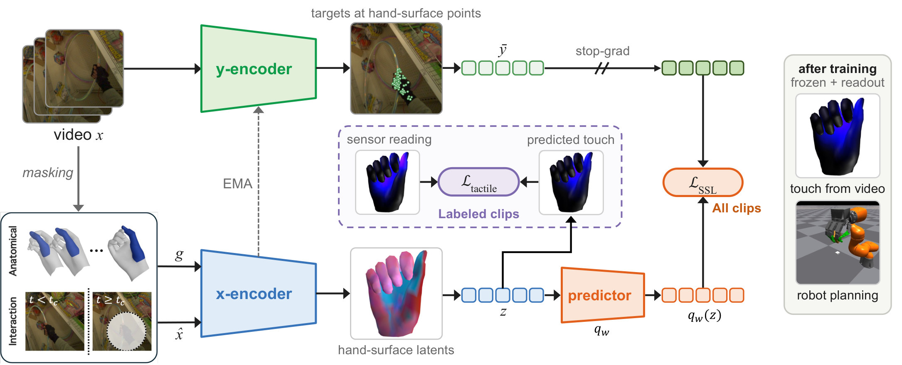
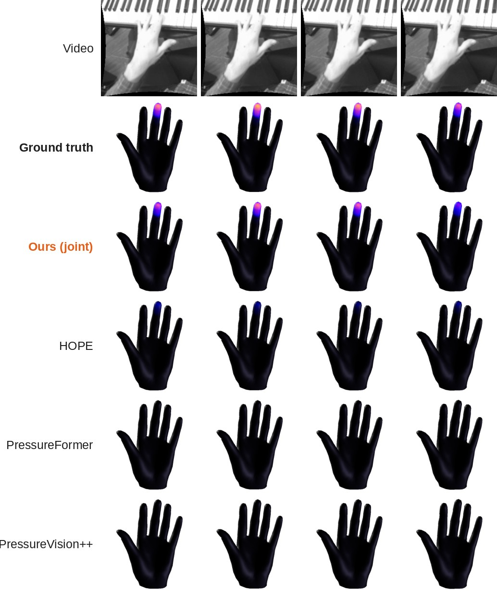
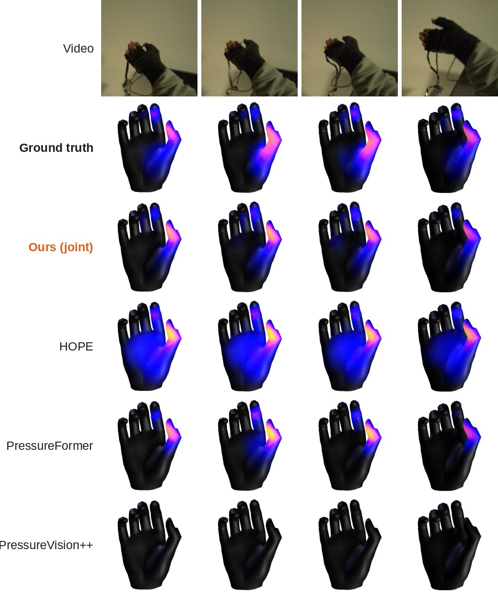
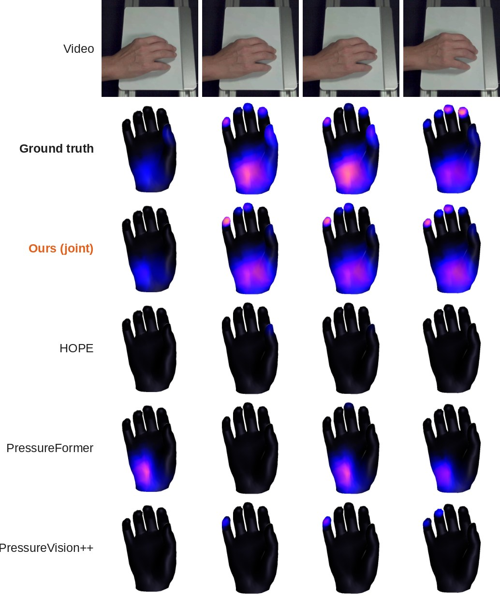
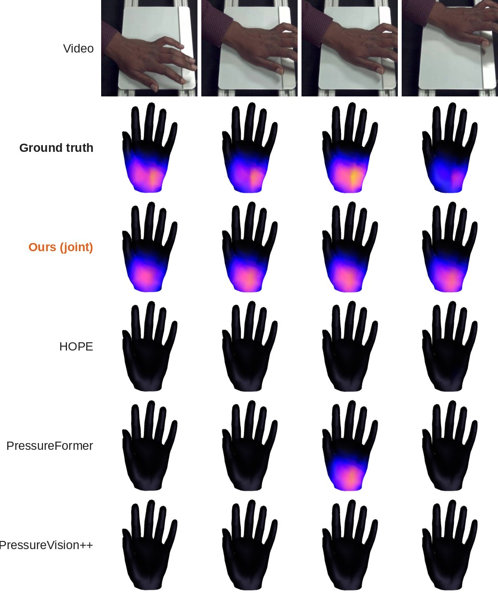
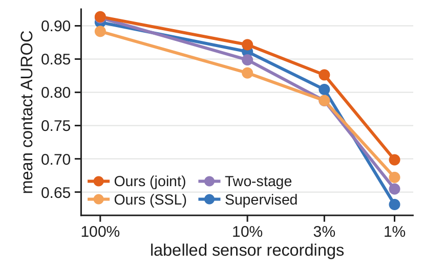

Tactile Representation Learning from Hand‑Object Video with Limited Tactile Supervision
1University of Minnesota 2University of Pennsylvania
Scroll & Zoom in/out!
Understanding contact and tactile magnitude in hand-object interaction is a key step toward physically intelligent systems, yet learning such representations is limited by the cost and restricted coverage of tactile measurements. We present Touch-JEPA, a framework for learning tactile representations from hand-object videos with limited tactile supervision. We first introduce a self-supervised pretraining objective that learns from video alone without tactile supervision. Using video-derived hand geometry, Touch-JEPA predicts masked visual features at corresponding hand-surface locations from spatial and temporal context, encouraging the representation to capture latent contact dynamics. We then extend this formulation to joint representation learning, where masked prediction is applied to all videos while tactile supervision is available only for a labeled subset, grounding the shared representation in measured contact and magnitude. With self-supervised pretraining alone, simple supervised readouts on frozen Touch-JEPA features outperform supervised baselines in contact discrimination and tactile magnitude estimation across three human-hand benchmarks, and transfer to robotic hands without robot tactile training data. Joint learning with limited tactile supervision further improves contact and magnitude estimation on the human-hand benchmarks. Together, these results show that hand-object video can provide scalable self-supervision for tactile representation learning, while limited tactile measurements provide complementary physical grounding.

Touch-JEPA overview. Given a human-object interaction video, the y-encoder processes unmasked RGB to produce target visual features at geometry-aligned hand-surface locations. The x-encoder combines masked RGB with estimated hand geometry to predict these targets. When tactile annotations are available, joint training additionally supervises contact and force-related predictions decoded from masked x-encoder states before the predictor, providing complementary physical grounding for the shared representation.
Three human-hand tactile benchmarks with different sensors, viewpoints and tasks: OpenTouch, PressureVision DB and HandSense. Our rows read touch from the learned representation and are compared with retrained supervised baselines.
| OpenTouch | PVDB | HandSense | |||||||||
|---|---|---|---|---|---|---|---|---|---|---|---|
| Method | AUROC ↑ | F1 ↑ | tAUC ↑ | AUROC ↑ | F1 ↑ | tAUC ↑ | AUROC ↑ | F1 ↑ | tAUC ↑ | ||
| PressureVision | 0.676 | 0.364 | 0.506 | 0.890 | 0.368 | 0.748 | 0.734 | 0.672 | 0.588 | ||
| PressureVision++ | 0.649 | 0.342 | 0.513 | 0.743 | 0.179 | 0.654 | 0.680 | 0.636 | 0.560 | ||
| PressureFormer | 0.785 | 0.492 | 0.534 | 0.920 | 0.257 | 0.744 | 0.811 | 0.751 | 0.695 | ||
| HOPE | 0.762 | 0.471 | 0.517 | 0.911 | 0.391 | 0.705 | 0.844 | 0.715 | 0.609 | ||
| Ours (SSL) | 0.836 | 0.549 | 0.527 | 0.925 | 0.475 | 0.783 | 0.914 | 0.826 | 0.699 | ||
| Ours (joint) | 0.862 | 0.582 | 0.540 | 0.949 | 0.553 | 0.802 | 0.941 | 0.861 | 0.752 | ||
| Static prior | 0.832 | 0.542 | 0.500 | 0.819 | 0.335 | 0.500 | 0.559 | 0.618 | 0.500 | ||
| OpenTouch | PVDB | HandSense | |||||||||
|---|---|---|---|---|---|---|---|---|---|---|---|
| Method | nMAE ↓ | nRMSE ↓ | t-ρ ↑ | nMAE ↓ | nRMSE ↓ | t-ρ ↑ | nMAE ↓ | nRMSE ↓ | t-ρ ↑ | ||
| PressureVision | 0.363 | 1.099 | −0.005 | 0.130 | 0.919 | 0.280 | 0.738 | 1.210 | 0.036 | ||
| PressureVision++ | 0.364 | 1.102 | −0.009 | 0.136 | 0.967 | 0.155 | 0.746 | 1.219 | 0.013 | ||
| PressureFormer | 0.364 | 0.939 | 0.091 | 0.137 | 0.981 | 0.181 | 0.590 | 0.914 | 0.111 | ||
| HOPE | 0.366 | 0.974 | 0.056 | 0.130 | 0.951 | 0.195 | 0.614 | 0.922 | 0.096 | ||
| Ours (SSL) | 0.326 | 0.914 | 0.159 | 0.129 | 0.893 | 0.466 | 0.495 | 0.781 | 0.162 | ||
| Ours (joint) | 0.314 | 0.879 | 0.142 | 0.123 | 0.872 | 0.458 | 0.461 | 0.740 | 0.245 | ||
| Static prior | 0.398 | 0.898 | N/A | 0.221 | 0.955 | N/A | 0.755 | 1.047 | N/A | ||
AUROC and F1: per-entry contact; tAUC: contact over time. nMAE and nRMSE: magnitude error normalized per dataset; t-ρ: rank correlation of the hand's summed magnitude over time within contact. Targets are nominal pressure for PVDB and uncalibrated sensor magnitudes for OpenTouch and HandSense. The static prior is a video-free per-channel reference and is not ranked.
Four test sequences from the appendix where the difference is easy to see. Every method is drawn on the same estimated hand mesh with the same color scale, at four frames of each sequence.




Contact AUROC averaged over the three test sets as the share of labeled sensor recordings drops from 100% to 1%. Joint training keeps the lead at every budget, and the gap to the supervised model widens as labels become scarce, reaching +0.067 at 1%.

Applied without adaptation to 89 real Allegro-hand episodes, with no robot tactile data in training.
| Method | AUROC ↑ | AP ↑ | F1 ↑ | ρ ↑ |
|---|---|---|---|---|
| PressureVision | 0.506 | 0.443 | 0.474 | −0.032 |
| PressureVision++ | 0.435 | 0.395 | 0.429 | −0.039 |
| HOPE | 0.582 | 0.510 | 0.535 | 0.159 |
| Ours (SSL) | 0.676 | 0.608 | 0.608 | 0.183 |
| Ours (joint) | 0.628 | 0.529 | 0.569 | 0.106 |
Each video shows one fresh simulated scene with the same planner and task rule for both encoders: Ours (joint) succeeds and V-JEPA 2.1 (frozen) fails.
Same scenes, planner and task rule for every encoder; rules were chosen on separate development scenes before the final run.
Touch-JEPA-AC turns the frozen encoder into a world model for a simulated robot hand, following V-JEPA 2-AC. An action-conditioned predictor, trained on robot trajectories, imagines what the scene and the hand surface will look like after a candidate move. The robot then plans in this learned space: at every decision it picks the move whose imagined outcome is closest to the next goal image, executes it, looks again, and replans.
E(a) = | B̂(a) − B★ | + w | Û(a) − U★ |energy of a move a: scene features B and hand-surface (touch) features U, predicted vs goal
CEM, the cross-entropy method, searches over moves by sampling. It draws 400 candidate moves, scores each with the predictor, keeps the 10 with the lowest energy (orange) and refits its sampling distribution to them, ten times, and the robot executes the final mean. Shown for a Grasp decision with the same input frames for both encoders, over the (Δx, Δz) plane through the demonstrated move: Ours (joint) forms a narrow well whose minimum lies 0.3 cm from the demonstrated move, while the minimum for V-JEPA 2.1 (frozen) lies 1.4 cm away.